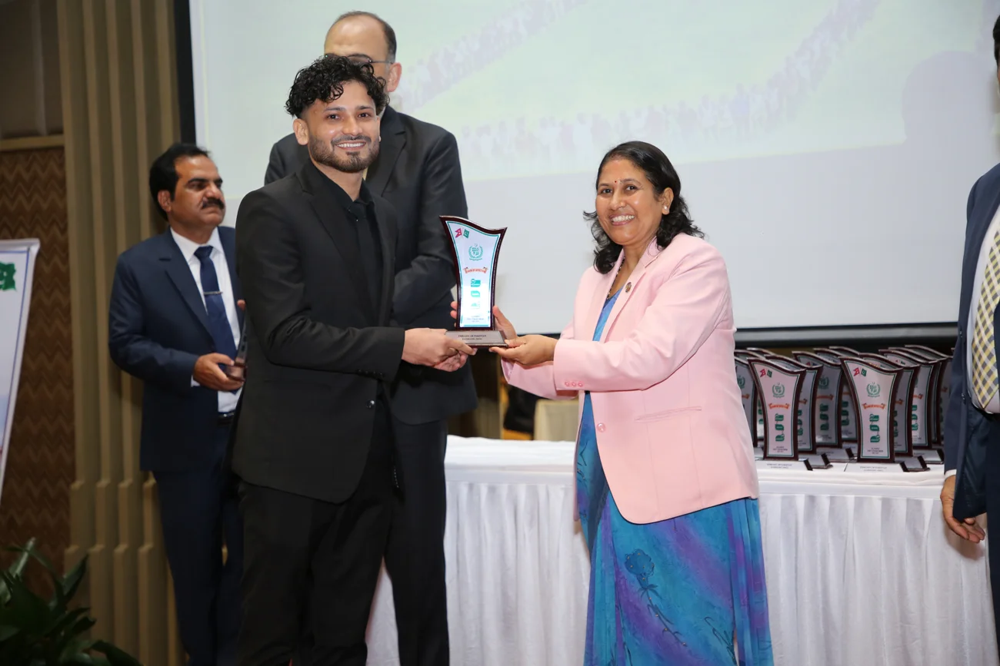

I document pavement and drainage conditions, collect GPS data, and turn field observations into reports, QGIS maps and cost estimates.
Chandrauta–Kohalpur
Surveyed pavement, bridges, culverts and drainage across the highway section.
Narayangadh–Butwal
Conducted International Roughness Index testing and contributed to the pavement roughness report.
Hetauda–Pathlaiya
Supported the site visit, pre-proposal report and mapping for the SASEC Highway Improvement and Ecosystem Restoration Project.
Eco Steel and Hydro Structures · 2023–2025
Structural steel design support
Prepared AutoCAD drawings and steel quantity estimates, assisted with ETABS modelling, and observed steel construction on site.
UET Lahore · Final-year project
Hydropower from an irrigation canal
Combined field observations and Punjab Irrigation Department records to assess generating potential at canal falls, head regulators and outlets in four divisions of the BRBD Canal.
With Mandakini Karki and Arjani Karmacharya, I co-authored a comparative policy roadmap on how AI, remote sensing and GIS can support landslide risk management in five Asia-Pacific countries.
Conference proceedings, pp. 13–20 · ISBN 978-624-6979-00-3
Contemporary Journal of Social Science Review · Co-author
Education & community
About me
I studied civil engineering at Seti Technical School in Dipayal and at the University of Engineering and Technology in Lahore. I now work in Kathmandu.
Scholarships
PTAP scholarship for undergraduate study in Pakistan and a merit scholarship from CTEVT for diploma studies in Nepal.
Fellowship & volunteering
Amal Academy Career-Prep Fellow and Leo Club volunteer. My volunteer work has included relief distribution in Kathmandu Valley and Doti.
Elevate Nepal
Programme participant.

Receiving a token of appreciation from Nepal’s education minister.
Contact
Let’s talk.
Get in touch about civil engineering work or research collaboration.